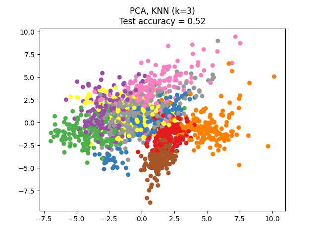
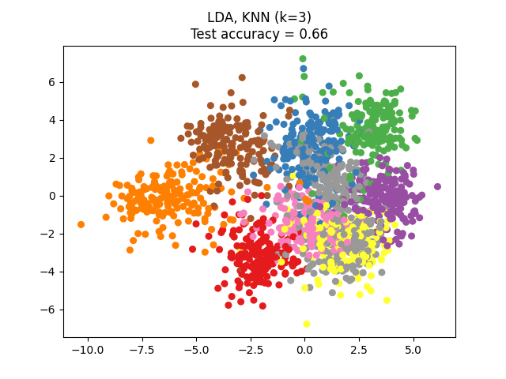
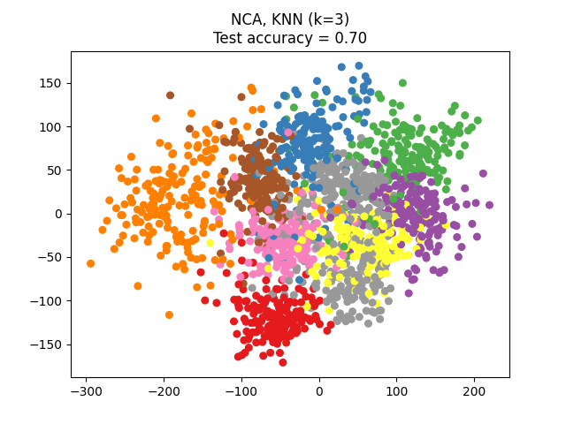

Note
Go to the end to download the full example code or to run this example in your browser via Binder
Dimensionality Reduction with Neighborhood Components Analysis¶
Sample usage of Neighborhood Components Analysis for dimensionality reduction.
This example compares different (linear) dimensionality reduction methods applied on the Digits data set. The data set contains images of digits from 0 to 9 with approximately 180 samples of each class. Each image is of dimension 8x8 = 64, and is reduced to a two-dimensional data point.
Principal Component Analysis (PCA) applied to this data identifies the combination of attributes (principal components, or directions in the feature space) that account for the most variance in the data. Here we plot the different samples on the 2 first principal components.
Linear Discriminant Analysis (LDA) tries to identify attributes that account for the most variance between classes. In particular, LDA, in contrast to PCA, is a supervised method, using known class labels.
Neighborhood Components Analysis (NCA) tries to find a feature space such that a stochastic nearest neighbor algorithm will give the best accuracy. Like LDA, it is a supervised method.
One can see that NCA enforces a clustering of the data that is visually meaningful despite the large reduction in dimension.
- 
- 
- 
# License: BSD 3 clause
import matplotlib.pyplot as plt
import numpy as np
from sklearn import datasets
from sklearn.decomposition import PCA
from sklearn.discriminant_analysis import LinearDiscriminantAnalysis
from sklearn.model_selection import train_test_split
from sklearn.neighbors import KNeighborsClassifier, NeighborhoodComponentsAnalysis
from sklearn.pipeline import make_pipeline
from sklearn.preprocessing import StandardScaler
n_neighbors = 3
random_state = 0
# Load Digits dataset
X, y = datasets.load_digits(return_X_y=True)
# Split into train/test
X_train, X_test, y_train, y_test = train_test_split(
X, y, test_size=0.5, stratify=y, random_state=random_state
)
dim = len(X[0])
n_classes = len(np.unique(y))
# Reduce dimension to 2 with PCA
pca = make_pipeline(StandardScaler(), PCA(n_components=2, random_state=random_state))
# Reduce dimension to 2 with LinearDiscriminantAnalysis
lda = make_pipeline(StandardScaler(), LinearDiscriminantAnalysis(n_components=2))
# Reduce dimension to 2 with NeighborhoodComponentAnalysis
nca = make_pipeline(
StandardScaler(),
NeighborhoodComponentsAnalysis(n_components=2, random_state=random_state),
)
# Use a nearest neighbor classifier to evaluate the methods
knn = KNeighborsClassifier(n_neighbors=n_neighbors)
# Make a list of the methods to be compared
dim_reduction_methods = [("PCA", pca), ("LDA", lda), ("NCA", nca)]
# plt.figure()
for i, (name, model) in enumerate(dim_reduction_methods):
plt.figure()
# plt.subplot(1, 3, i + 1, aspect=1)
# Fit the method's model
model.fit(X_train, y_train)
# Fit a nearest neighbor classifier on the embedded training set
knn.fit(model.transform(X_train), y_train)
# Compute the nearest neighbor accuracy on the embedded test set
acc_knn = knn.score(model.transform(X_test), y_test)
# Embed the data set in 2 dimensions using the fitted model
X_embedded = model.transform(X)
# Plot the projected points and show the evaluation score
plt.scatter(X_embedded[:, 0], X_embedded[:, 1], c=y, s=30, cmap="Set1")
plt.title(
"{}, KNN (k={})\nTest accuracy = {:.2f}".format(name, n_neighbors, acc_knn)
)
plt.show()
Total running time of the script: (0 minutes 1.791 seconds)